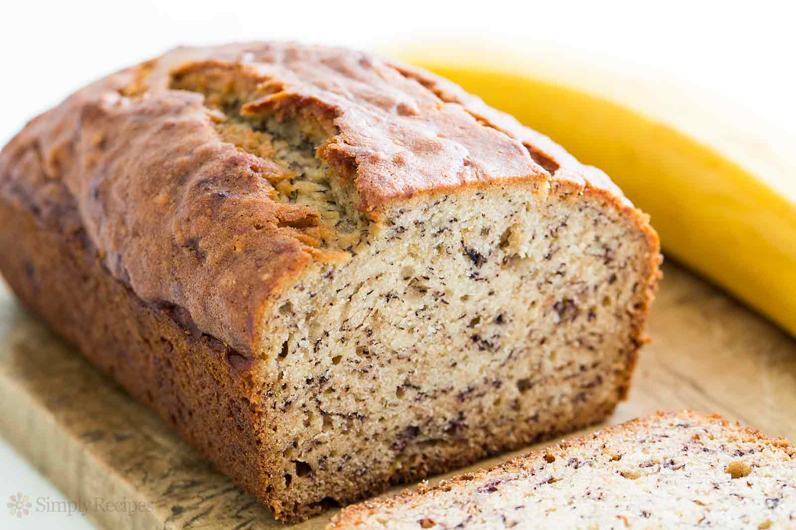

Recipes to make with Bananas
Banana Bread

- 2 cups (250g) all-purpose flour (spoon & leveled)
- 1 teaspoon baking soda
- 1/4 teaspoon salt
- 1/2 teaspoon ground cinnamon
- 1/2 cup (1 stick or 115g) unsalted butter, softened to room temperature
- 3/4 cup (150g) packed light or dark brown sugar
- 2 large eggs, at room temperature
- 1/3 cup (80g) plain yogurt or sour cream (I use Greek yogurt)
- 2 cups mashed bananas (about 4 large ripe bananas)
- 1 teaspoon pure vanilla extract
- optional: 3/4 cup (100g) chopped pecans or walnuts